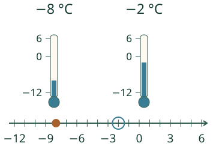
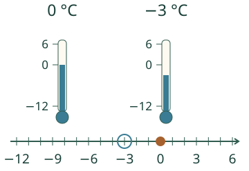
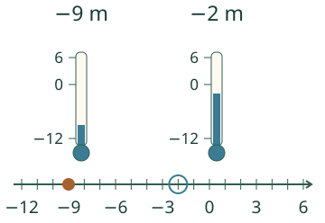

Aava vertailee pakkasia. Kumpi on lämpimämpi: −7 vai −3 °C?
Miksi miinusluvuista toinen on suurempi?
Oikealla on suurempi

Merkin < kärki osoittaa pienempään lukuun. Sama vertailu toisin päin on −2 > −8.
Nolla ei ole pakkasluku

Ennusta: lukema nousee −4 °C:sta −3 °C:een. Kasvaako vai pieneneekö luku? Kokeile mallilla.
Sama järjestys korkeuksissa

Järjestä itse
Lisää tutkittavaa
Milloin ohje ”lähempänä nollaa on suurempi” toimii? Kahdelle negatiiviselle luvulle kyllä. Mutta 2 ja 6 ovat positiivisia: 6 on suurempi. Yleinen sääntö on aina: oikealla on suurempi.
Lopuksi: järjestä −6, 0 ja −1. Perustele, miksi nolla tulee viimeiseksi.
Opettajalle ja ilman ruutua
Luokat 3–6. Vaadittu AND: M-NEG-02 ja M-NUM-10. Oma malli käyttää kokonaislukuja −12…6, tehtävät neljän havainnon järjestystä. Yhtä suuret lukemat hyväksytään kummassa tahansa havaintojärjestyksessä. Sama yksikkö ja nollataso säilyvät; korkeusesimerkissä pystysuuntainen lukusuora korvaa lämpömittarin °C-yksikön metreillä. Tämä ei opeta fyysistä lämpötilan mittausta. Nappi muuttaa mallin lukemaa, ei kulunutta aikaa.
Tee pöydälle tai lattialle tasavälinen lukusuora ja anna oppilaan sijoittaa neljä lukukorttia, myös samat luvut. Kortit voi järjestää ilman nimeämis- tai puhepakkoa. Kokeile lämpötilan jälkeen sovittua korkeuden nollatasoa. Ruudun nykyinen vastaus ja valinnainen malli eivät todista itsenäistä, viivästettyä tai muodollista hallintaa. Ei aikarajaa, palkintoja tai oppilashistoriaa. Tavallinen kokonaislukuarvoinen desimaaliteksti, etumerkki ja ylimääräiset nollat sallitaan; ei laskulauseita, murtolukuja tai eksponentteja. Raakateksti enintään 128 merkkiä.